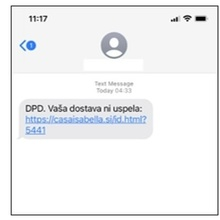

PRETVARJANJE
Na spletu je veliko ljudi, ki se izdajajo za druge ljudi.
(npr.)Izdajajo se za tvoje prijatelje kjer piše, da ti bodo dali veliko denarja, ampak da je pogoj, da jim daš osebne podatke.
!!!IN TI JIM NE SMEŠ DATI SVOJE OSEBNE PODATKE!!!
!!!NE SMEŠ JIM DATI TUDI GESLA ALI UPORABNIŠKA IMENA SVOJEGA MAILA!!!

S temi spletnimi pretvarjanji hočejo prevaranti doseči:
- Tvoja gesla,
- uporabniška imena,
- slike,
- osebne podatke,
- predvsem pa tvoj denar.
Ljudje največkrat verjamejo prevarantom če so ti še posebaj prijazni do njih ali pa vse vključuje veliko denarja.
Ne smeš jim povedati nič resničnega dokler ne veš kdo je to.
Spletne prevare so lahko z linki ki naj bi kliknili na njih.Ne smemo klikati neznanih linkov od neznanih ljudi.
